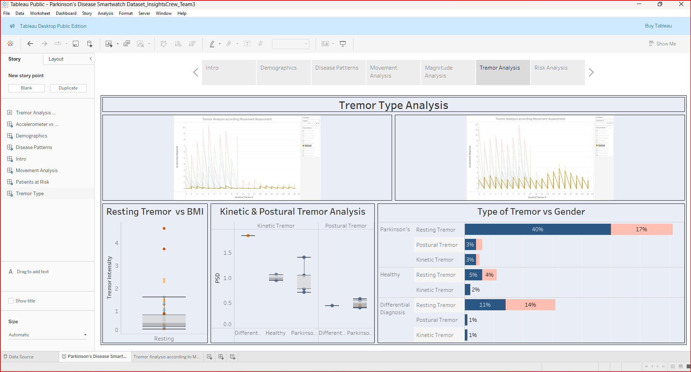

Parkinsons Disease Smartwatch Dataset Analysis
Project Overview
This project involved analyzing smartwatch sensor data to study movement patterns in individuals with Parkinson’s Disease (PD), Atypical Parkinsonism, Multiple Sclerosis, Essential Tremor, and other movement disorders, as well as healthy individuals. Using accelerometer and gyroscope readings collected from 469 participants across 11 movement tasks, the goal was to extract insights into disease progression, symptom severity, and potential risk factors.
Roles and Responsibilites
-
• Data Processing & Optimization: Handled 12+ million records, reduced load times by summarizing movement data at 20-microsecond intervals, and aggregated sensor readings for efficient visualization in Tableau.
• Data Transformation: Created calculated fields, parameters, and filters to customize movement analysis based on Kinetic, Postural, and Resting states.
• Dashboard Development: Built interactive dashboards for demographics, tremor analysis, and risk prediction, helping visualize trends in disease progression.
• Movement & Tremor Analysis: Identified patterns in Parkinson’s-related tremors and their correlation with BMI, age, gender, and disease duration.
• Risk Assessment: Categorized high-risk patients based on family history, non-motor symptoms, and biomarker data.
Key insights and Findings
-
• Demographics: 59% of subjects had Parkinson’s, with obesity and overweight being prevalent.
• Tremor Patterns: Resting tremors were the most severe, with 40% of male and 17% of female Parkinson’s patients affected.
• Risk Factors: Overweight individuals with family history and sleep/fatigue complaints were identified as high-risk.
• Movement Analysis: Gyroscope readings showed increased movement imbalance in Parkinson’s patients, particularly in the resting state.
• Gender-Based Differences: Female patients exhibited more non-motor symptoms (anxiety, depression), while males had more motor impairments.
Challenges & Solutions
• Handling Large Datasets: Optimized Tableau performance by aggregating movement data and filtering unnecessary details. • Interpreting Sensor Data: Developed a structured approach to analyze accelerometer and gyroscope readings, ensuring accurate movement categorization.
Tools and Technologies used
-
• Tableau – Data visualization & dashboard creation
• Power BI – Advanced analytics & data modeling
• SQL & Python – Data transformation & aggregation
• Excel – Exploratory data analysis
Impact and Learnings
• This project provided critical insights into Parkinson’s disease progression, demonstrating how wearable technology can help track motor impairments. It reinforced the importance of data aggregation for large-scale datasets and optimized visualization strategies for complex healthcare analytics.